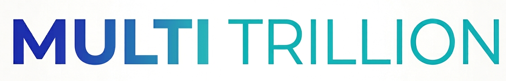

takoGATEは日常を少し便利にするウェブ開発やマイナーな人向けの支援・ウェブ開発さらには、独自の学力テストなど幅広い活動を行っています。
複雑な機能や装飾をそぎ落とし、誰でも直感的に扱えるUIを追及します。「迷わず使えること」を最優先に設計しています。
一般的なサービスではこぼれ落ちてしまうようなマイナーなニーズや特定の層に向けた支援・ツール開発に光を当てます。
ウェブサービスだけでなく、独自の学力テストや勉強に向けての資料を出版したりなど、幅広い事業展開をしています。
ブラウザ上で利用できる日常を少し便利にするサービスを展開しております。
独自の学力テストを行っております。受験は無償で受けることができ、今の自分の学力を知ることができます。
オリジナルの本・資料を無償にて出版しています。多くの人へ学びや新しい発見を届けています。
十字キーで落ちてくるブロックを動かしながら操作します。下にブロックが溜まり、横一列ブロックが溜まったら横一列のブロックが消え、ポイントが入ります。
数字だけでなく、指定の文字や単語などをランダムに引きます。抽選会数や一度に当たる分も設定できます。
ブラウザ上でサクサク動く、ちょっとした作業を短縮する便利ツール群です。